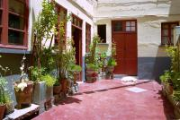
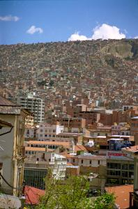

|
Jeudi 4 octobre
3H00 du mat', on quitte le lac Poopo qu'on n'a même pas vu -il faisait nuit
et on dormait- et on arrive à Oruro. La changement de bus. On attend gentiment
sur le quai 1/4 d'heure, 1/2 heure, on a sommeil et on se pèle. Les autres voyageurs
ont disparu. Alors, on décide de se bouger et on entre dans le terminal, on
l'explore. Et là, surprise, ils sont tous de l'autre côté du terminal à envahir
NOTRE bus! Vite, vite, il est 3H45 et le bus part dans un quart d'heure. Ouf,
nos places étaient quand même réservées, on se rendort jusqu'à 7H00, heure d'arrivée
à La Paz. Là, dans le grand terminal, on entend plein de cris, comme à la criée
dans les ports, des cris un peu étouffés, presque des lamentations... Qu'est-ce?
On entre et on voit. Chaque compagnie de bus a un bureau de 3 mètres sur 2,
elles sont 30 ou 40. Et penchées au-dessus de chaque guichet, les femmes crient
les destinations de leur compagnie! Génial!
Un peu de marche chargés de nos sacs à dos et on arrive à notre hôtel. Il est
à peine 7H30 du matin et on est un peu crevé. Le trajet de nuit depuis Uyuni
avec changement y est sans doute pour quelque chose. Et puis un peu sales aussi.
Notre dernière douche remonte quand même à lundi soir. C'était une douche brûlante
chauffée par un volcan, mais quand même... A midi, on retrouve Geneviève et
Joël et on va se déguster un pique macho géant. Un pique macho, ce n'est peut-être
pas le plat le plus léger du monde, mais quand on a faim, ça cale bien. Des
morceaux de boeufs, des tomates, des oignons et des pommes de terre... miam
miam...
Vendredi 5 octobre
La Paz est une ville très agréable. Ce n'est sûrement pas la ville la plus
belle de Bolivie. Mais elle nous apparaît tout de suite accueillante et chaleureuse.
Déjà les gens y sont vraiment sympas et souriants. Le contact ici est beaucoup
plus facile qu'à Potosi ou à Sucre, où on avait parfois un peu l'impression
d'être faces à des murs. On était un peu déçus jusqu'à présent. Même lorsqu'on
allait acheter quelque chose au marché, il n'était pas rare ques les visages
restent froids et sévères. Ici, en se baladant dans les marchés, le simple fait
de s'arrêter et de s'intéresser à une échoppe nous donne souvent droit à un
sourire et suffit pour entamer la conversation.
Et ce ne sont pas les marchés qui manquent. Un marché artisanal, il est vrai
un peu touristique, au-dessus de la place San Francisco, un autre juste à côté
où on trouve toutes de sortes d'aliments, et puis un peu plus haut dans la ville,
une bonne dizaine de rues où se vendent vêtements, chaussures et autres accessoires.
On dirait qu'un quartier entier de la Paz n'est qu'un immense marché. Très agréable.
Et puis enfin, ce qui est très chouette à La Paz, c'est le relief de la ville.
Elle s'étend de 3000 à 4000 mètres d'altitude. Ca monte tout le temps mais quels
points de vue!!! Depuis le centre -à 3600 mètres environ- on voit le haut de
la ville, l'Alto. Les maisons semblent collées les unes aux autres, emboîtées,
enchevêtrées, mises les unes sur les autres. Un sacré embroglio. Comme dit Joël,
je voudrais bien voir le plan d'urbanisme. Dans le bas de la ville, il y a les
quartiers les plus riches. Fait assez rare, mais vue l'altitude, rien d'étonnant,
on y respire mieux et le climat y est plus sain. En haut, sur l'Alto, ce sont
les pauvres. Les maisons y sont beaucoup plus simples et beaucoup moins harmonieuses.
Les façades se succèdent, les couleurs aussi. On passe de maisons crépies à
des taudis en briques rouges. Beaucoup semblent inachevées, nombreuses sont
celles couvertes de vieilles affiches ou à l'aspect défraîchi.
Bref, une ville contrastée. Mais animée et chaleureuse, on l'a déjà dit, on
sait, ce n'est pas la sénilité. Mais aussi un peu trop embouteillée, mais ça
c'est la plaie du modernisme, non? Autre conséquence un peu inévitable de ces
contrastes, la délinquance. Si notre vieux guide de 1995 décrivait La Paz comme
une ville vraiment sûre par rapport au Pérou, les choses ont peut-être un peu
évolué dans le mauvais sens. Pa d'agressions violentes comme chez son voisin
plus touristique, mais aujourd'hui Geneviève s'est tout de même fait découper
la poche au cutter. Et nous, on s'est vu jouer un sketche. Un faux touriste
américain est venu nous voir. Il prétendait s'être fait voler son sac et toutes
ses affaires. Il s'est pointé juste au moment où on sortait notre appareil photo.Il
nous a demandé si on n'avait pas un plan de la ville pour trouver son ambassade.
Je ne sais pas trop pourquoi, mais on s'est tout de suite méfié. On a rangé
l'appareil et on s'est couché sur le sac! Peut-être parce que le gars assis
à côté de nous semblait un peu trop intéressé par son baratin en anglais...
Dans notre hôtel, ils nous ont confirmé, il est connu. C'est un coup qu'ils
font à deux régulièrement, le faus touristes qui détourne l'attention et le
vrai bolivien qui se barre avec le sac. Pas cette fois-ci... On croise les doigts
même si ce n'est que de la superstition.
Suite du voyage : Coroico
|

Bolivie
La Paz
|

Bolivie
La Paz
|
Bolivie
La Paz
|
Bolivie
La Paz
|
|
|